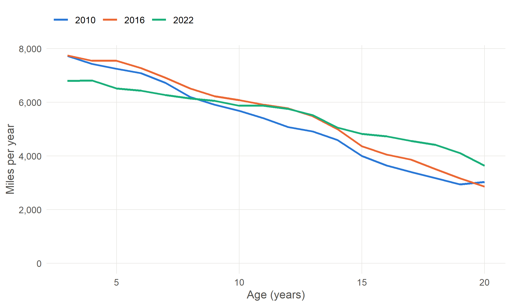
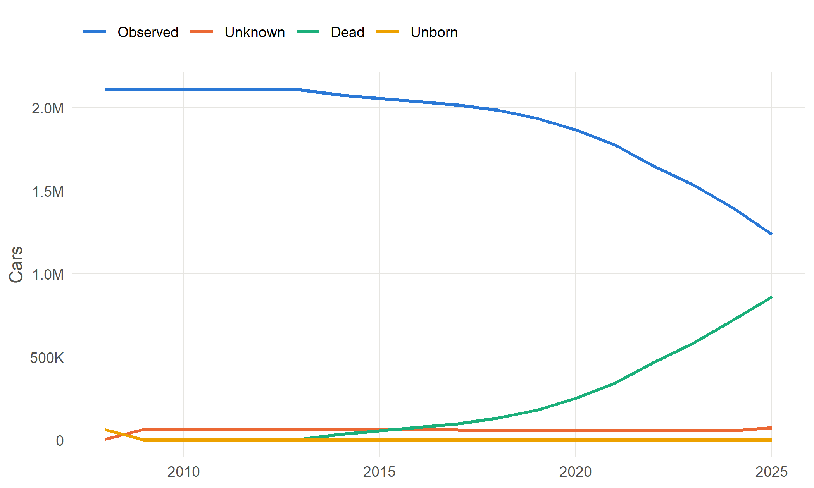

| body_type | fuel_simple | n_vehicles |
|---|---|---|
| Cars | Petrol | 21,977,489 |
| Cars | Diesel | 13,773,447 |
| Light goods vehicles | Diesel | 4,938,563 |
| Motorcycles | Petrol | 1,602,715 |
| Cars | Hybrid Electric | 1,380,871 |
| Cars | Electric | 619,537 |
| Cars | Plug-in Hybrid Electric | 332,246 |
| Light goods vehicles | Petrol | 72,844 |
| Cars | Other | 72,322 |
| Heavy goods vehicles | Diesel | 50,218 |
17 Worked examples: code
These examples query the vehicle table with DuckDB SQL. Run them from R, Python or the command line as shown in Chapter 15, replacing vehicles_enhanced.parquet with the path to your copy. The results shown are from running exactly these queries on the current version of the data. The queries are kept in the book’s sql/ folder.
17.1 Example 1: counting the vehicles observed in a year
Question: How many vehicles of each type and fuel were observed in 2022?
-- Vehicles observed in 2022, by body type and fuel group.
-- "Observed" means the vehicle has a real postcode area in 2022,
-- not one of the statuses unborn, dead or unknown.
SELECT
body_type,
fuel_simple,
count(*) AS n_vehicles
FROM read_parquet('vehicles_enhanced.parquet')
WHERE pca_2022 NOT IN ('unborn', 'dead', 'unknown')
GROUP BY body_type, fuel_simple
ORDER BY n_vehicles DESC;The key step is the WHERE clause. Without it, the count would include every vehicle in the table, including those scrapped in 2006 and those not yet built in 2022.
17.2 Example 2: reshaping to one row per vehicle per year
Question: How does the annual mileage of a Ford Fiesta change as it ages, and has that changed over time?
The vehicle table has one column per year. To analyse by age, the year columns need to become rows. DuckDB’s UNPIVOT does this: the mileage and plausibility columns are unpivoted separately and joined back together by vehicle and year. Filtering to one model first keeps the reshaped table small.
-- Average annual mileage of Ford Fiestas by age, for three years.
-- The vehicle table is wide (one column per year), so the mileage and
-- plausibility columns are first turned into long form: one row per
-- vehicle per year.
WITH fiesta AS (
SELECT *
FROM read_parquet('vehicles_enhanced.parquet')
WHERE make_final = 'FORD' AND model_final = 'FIESTA'
),
mileage AS (
UNPIVOT (SELECT vehicle_id, COLUMNS('^mileage_[0-9]{4}$') FROM fiesta)
ON COLUMNS('^mileage_') INTO NAME col VALUE mileage
),
legit AS (
UNPIVOT (SELECT vehicle_id, COLUMNS('^legit_mileage_[0-9]{4}$') FROM fiesta)
ON COLUMNS('^legit_mileage_') INTO NAME col VALUE legit
)
SELECT
CAST(right(m.col, 4) AS INTEGER) AS year,
CAST(right(m.col, 4) AS INTEGER) - year(f.first_use_date) AS age,
count(*) AS n_vehicles,
round(avg(m.mileage)) AS mean_mileage,
median(m.mileage) AS median_mileage
FROM mileage m
JOIN legit l
ON l.vehicle_id = m.vehicle_id AND right(l.col, 4) = right(m.col, 4)
JOIN fiesta f ON f.vehicle_id = m.vehicle_id
WHERE l.legit -- plausible mileage only
AND right(m.col, 4) IN ('2010', '2016', '2022')
GROUP BY year, age
HAVING age BETWEEN 3 AND 20
ORDER BY year, age;
Mileage falls with age, and the whole curve is lower in 2022 than in 2010. The query starts at age 3. A Fiesta has no odometer reading before its first MOT at three, so its mileage in earlier years can only come from sharing out the distance since new, and says little about use at each age.
17.3 Example 3: recorded against filled values
Question: Does the CO2 of new petrol and diesel cars depend on whether the value was recorded or filled from similar vehicles?
co2_src records where each harmonised value came from. Comparing the average of all values with the average of recorded values only is a quick test of whether filling gaps has changed a result.
-- CO2 of petrol and diesel cars first used 2012-2019: all values against
-- recorded values only. co2_src says where each value came from.
SELECT
year(first_use_date) AS first_use_year,
fuel_simple,
count(co2) AS n_with_co2,
round(avg(co2), 1) AS mean_co2_all,
count(co2) FILTER (WHERE co2_src = 'dvla') AS n_recorded,
round(avg(co2) FILTER (WHERE co2_src = 'dvla'), 1) AS mean_co2_recorded
FROM read_parquet('vehicles_enhanced.parquet')
WHERE body_type = 'Cars'
AND fuel_simple IN ('Petrol', 'Diesel')
AND year(first_use_date) BETWEEN 2012 AND 2019
GROUP BY first_use_year, fuel_simple
ORDER BY fuel_simple, first_use_year;| First used | Fuel | With CO2 | Mean, all | Recorded | Mean, recorded |
|---|---|---|---|---|---|
| 2,012 | Diesel | 1,044,024 | 133.1 | 985,297 | 133.3 |
| 2,013 | Diesel | 1,142,090 | 128.9 | 1,092,546 | 128.9 |
| 2,014 | Diesel | 1,258,203 | 124.9 | 1,211,627 | 124.9 |
| 2,015 | Diesel | 1,299,198 | 121.4 | 1,253,527 | 121.3 |
| 2,016 | Diesel | 1,308,658 | 120.2 | 1,266,661 | 120.1 |
| 2,017 | Diesel | 1,087,612 | 122.3 | 1,049,612 | 122.2 |
| 2,018 | Diesel | 763,883 | 129.2 | 731,842 | 129.3 |
| 2,019 | Diesel | 625,937 | 135.0 | 598,798 | 134.9 |
| 2,012 | Petrol | 993,882 | 133.9 | 944,904 | 133.6 |
| 2,013 | Petrol | 1,121,497 | 129.3 | 1,071,185 | 128.9 |
| 2,014 | Petrol | 1,200,698 | 127.0 | 1,157,079 | 126.5 |
| 2,015 | Petrol | 1,297,826 | 124.7 | 1,258,992 | 124.2 |
| 2,016 | Petrol | 1,327,606 | 124.1 | 1,295,659 | 123.7 |
| 2,017 | Petrol | 1,358,172 | 125.4 | 1,330,371 | 125.0 |
| 2,018 | Petrol | 1,476,384 | 128.3 | 1,445,764 | 128.0 |
| 2,019 | Petrol | 1,524,152 | 132.2 | 1,488,701 | 131.8 |
Here the two averages are almost identical, because most cars of these years have a recorded value. Note the rise after 2017 for both fuels: this coincides with the change from the NEDC to the WLTP test (Chapter 4), not necessarily a real increase.
17.4 Example 4: following a cohort
Question: What happened to the cars first used in 2008?
-- What happened to the cars first used in 2008? For each year, count how
-- many were observed, unknown or dead. Only the pca_YYYY columns are needed.
WITH cohort AS (
SELECT vehicle_id, COLUMNS('^pca_[0-9]{4}$')
FROM read_parquet('vehicles_enhanced.parquet')
WHERE body_type = 'Cars' AND year(first_use_date) = 2008
),
long AS (
UNPIVOT cohort ON COLUMNS('^pca_') INTO NAME col VALUE pca
)
SELECT
CAST(right(col, 4) AS INTEGER) AS year,
CASE WHEN pca IN ('unborn', 'dead', 'unknown') THEN pca
ELSE 'observed' END AS status,
count(*) AS n_vehicles
FROM long
GROUP BY year, status
ORDER BY year, status;
Almost the whole cohort is observed from 2008, although most cars had their first MOT only in 2011: once a car has been tested, its first postcode area is copied back to its first registration (Chapter 6). The cohort then gradually becomes dead as cars stop being tested, about two years after their last MOT, because the postcode area is carried forward. The few cars observed before 2008 have a first-use date later than their first record, such as imports or re-registered vehicles. The unknown line rises again at the end of the series: cars that may simply not have been tested yet (Chapter 14, pitfall 4).
17.5 Example 5: where vehicles go
Question: Of the cars tested in the Leeds postcode area in 2019, where were they four years later?
-- Cars tested in the Leeds postcode area (LS) in 2019: where were they
-- in 2023?
SELECT
pca_2023,
count(*) AS n_vehicles
FROM read_parquet('vehicles_enhanced.parquet')
WHERE body_type = 'Cars' AND pca_2019 = 'LS'
GROUP BY pca_2023
ORDER BY n_vehicles DESC
LIMIT 12;| 2023 | Cars | Share of those shown |
|---|---|---|
| Leeds (LS) | 156,407 | 50.2% |
| dead | 75,998 | 24.4% |
| Bradford (BD) | 17,358 | 5.6% |
| Wakefield (WF) | 16,776 | 5.4% |
| Sheffield (S) | 9,773 | 3.1% |
| York (YO) | 7,912 | 2.5% |
| Doncaster (DN) | 5,914 | 1.9% |
| Birmingham (B) | 4,821 | 1.5% |
| Manchester (M) | 4,786 | 1.5% |
| Harrogate (HG) | 4,293 | 1.4% |
| Nottingham (NG) | 3,977 | 1.3% |
| Huddersfield (HD) | 3,462 | 1.1% |
Most were still tested in Leeds, and most of the rest had stopped being tested or were tested in a neighbouring area (Bradford, Wakefield, Sheffield, York). Moves to neighbouring areas will include cars that simply changed garage.
NoteTo be written
Further examples: joining the vehicle table to DfT statistics using dft_genmodel; estimating the share of an area’s cars that would be non-compliant in a Clean Air Zone; distributions of mileage within an area; working in dplyr or polars without SQL.